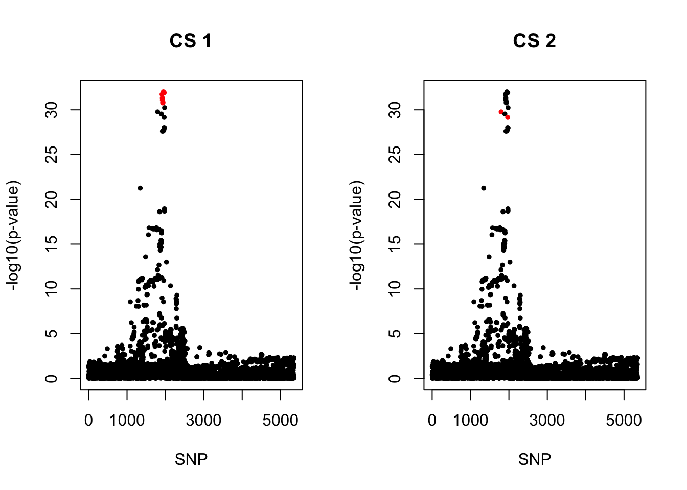
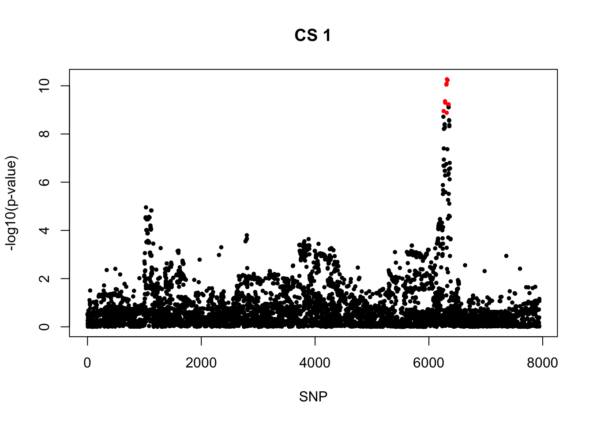
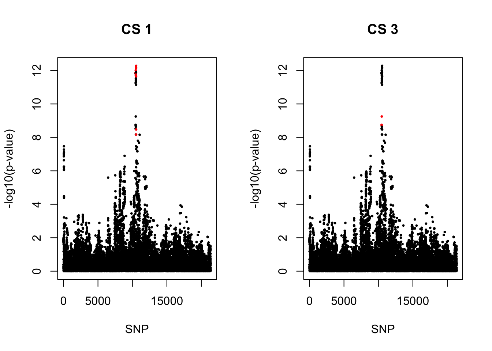

Self-report asthma: Coxph-SuSIE
Yunqi Yang
6/20/2024
Last updated: 2024-07-04
Checks: 7 0
Knit directory: survival-data-analysis/
This reproducible R Markdown analysis was created with workflowr (version 1.6.2). The Checks tab describes the reproducibility checks that were applied when the results were created. The Past versions tab lists the development history.
Great! Since the R Markdown file has been committed to the Git repository, you know the exact version of the code that produced these results.
Great job! The global environment was empty. Objects defined in the global environment can affect the analysis in your R Markdown file in unknown ways. For reproduciblity it’s best to always run the code in an empty environment.
The command set.seed(20240324) was run prior to running the code in the R Markdown file. Setting a seed ensures that any results that rely on randomness, e.g. subsampling or permutations, are reproducible.
Great job! Recording the operating system, R version, and package versions is critical for reproducibility.
Nice! There were no cached chunks for this analysis, so you can be confident that you successfully produced the results during this run.
Great job! Using relative paths to the files within your workflowr project makes it easier to run your code on other machines.
Great! You are using Git for version control. Tracking code development and connecting the code version to the results is critical for reproducibility.
The results in this page were generated with repository version df7d5f1. See the Past versions tab to see a history of the changes made to the R Markdown and HTML files.
Note that you need to be careful to ensure that all relevant files for the analysis have been committed to Git prior to generating the results (you can use wflow_publish or wflow_git_commit). workflowr only checks the R Markdown file, but you know if there are other scripts or data files that it depends on. Below is the status of the Git repository when the results were generated:
Ignored files:
Ignored: .DS_Store
Ignored: .Rhistory
Ignored: .Rproj.user/
Untracked files:
Untracked: output/Fig_gwas_coa_aoa.pdf
Note that any generated files, e.g. HTML, png, CSS, etc., are not included in this status report because it is ok for generated content to have uncommitted changes.
These are the previous versions of the repository in which changes were made to the R Markdown (analysis/susie_asthma_result1.Rmd) and HTML (docs/susie_asthma_result1.html) files. If you’ve configured a remote Git repository (see ?wflow_git_remote), click on the hyperlinks in the table below to view the files as they were in that past version.
| File | Version | Author | Date | Message |
|---|---|---|---|---|
| html | 00ae2c6 | yunqiyang0215 | 2024-06-28 | Build site. |
| Rmd | 402e074 | yunqiyang0215 | 2024-06-28 | wflow_publish("analysis/susie_asthma_result1.Rmd") |
| html | 38b4e25 | yunqiyang0215 | 2024-06-27 | Build site. |
| Rmd | d80d61c | yunqiyang0215 | 2024-06-27 | wflow_publish("analysis/susie_asthma_result1.Rmd") |
| html | 85ef406 | yunqiyang0215 | 2024-06-20 | Build site. |
| Rmd | f5dfe15 | yunqiyang0215 | 2024-06-20 | wflow_publish("analysis/susie_asthma_result1.Rmd") |
| html | fc8e7c4 | yunqiyang0215 | 2024-06-20 | Build site. |
| Rmd | cb1583e | yunqiyang0215 | 2024-06-20 | wflow_publish("analysis/susie_asthma_result1.Rmd") |
Description:
Coxph Susie result on all asthma/ AOA/ COA in UKBiobank.
library(survival)
library(susieR)
devtools::load_all("/Users/nicholeyang/Downloads/logisticsusie")ℹ Loading logisticsusieRegion 1
Strong signals for COA, marginal significant for AOA. rs61894547 was the most significant SNP reported by Carole’s paper, but not the most significant one in my result. However, have the largest PIP.
1. All asthma cases
region = "chr11_75500001_77400000"
res = readRDS(paste0("/Users/nicholeyang/Downloads/survivalsusie/result/asthma_self_report/result/all/fit.susie.", region, ".rds"))
gwas = readRDS(paste0("/Users/nicholeyang/downloads/survivalsusie/result/gwas_surv/all_gwas_", region, ".rds"))fit = res[[1]]
X = res[[2]]
print(res[[3]]) user system elapsed
116070.891 65190.274 9564.771 pip <- logisticsusie:::get_pip(fit$alpha)
effect_estimate <- colSums(fit$alpha * fit$mu)
pip.sorted = sort(pip, decreasing = TRUE)
pip.sorted[1:10] [1] 0.62563969 0.36681900 0.21652826 0.18795848 0.16064130 0.11232667
[7] 0.10899708 0.07188830 0.06583735 0.05808435class(fit) = "susie"
cs <- susie_get_cs(fit, X)
cs$cs
$cs$L2
[1] 829 1000
$cs$L1
[1] 943 951 952 954 961 964 965 968 979 1001
$purity
min.abs.corr mean.abs.corr median.abs.corr
L2 0.9428971 0.9428971 0.9428971
L1 0.9003599 0.9619019 0.9510408
$cs_index
[1] 2 1
$coverage
[1] 0.9890498 0.9574096
$requested_coverage
[1] 0.95par(mfrow = c(1,2))
snps1 = colnames(X)[cs$cs$L1]
colors <- ifelse(rownames(gwas) %in% snps1, "red", "black")
plot(-log10(gwas[, "p.value.spa"]), col = colors, xlab = "SNP", ylab = "-log10(p-value)", cex = 0.8, pch = 20, main = "CS 1")
snps2 = colnames(X)[cs$cs$L2]
colors <- ifelse(rownames(gwas) %in% snps2, "red", "black")
plot(-log10(gwas[, "p.value.spa"]), col = colors, xlab = "SNP", ylab = "-log10(p-value)", cex = 0.8, pch = 20, main = "CS 2")
| Version | Author | Date |
|---|---|---|
| fc8e7c4 | yunqiyang0215 | 2024-06-20 |
cbind(gwas[rownames(gwas) %in% snps1, ], pip[sort(cs$cs$L1)]) MAF missing.rate p.value.spa p.value.norm Stat
rs61893460_A 0.4520203 0 8.124552e-38 7.706256e-38 1613.997
rs7126418_T 0.4519984 0 1.379899e-37 1.309905e-37 1607.742
rs7110818_T 0.4512180 0 1.195983e-37 1.134530e-37 1608.185
rs7114362_T 0.4968866 0 9.059745e-36 8.818957e-36 -1570.311
rs7936070_T 0.4766971 0 1.503789e-37 1.452115e-37 1612.065
rs7936312_T 0.4766166 0 1.251399e-37 1.208159e-37 1613.890
rs7936323_A 0.4765950 0 1.070192e-37 1.033056e-37 1615.204
rs7936434_C 0.4768852 0 2.342714e-37 2.263324e-37 1607.740
rs11236791_A 0.4518935 0 8.407000e-38 7.973748e-38 1613.119
rs11236797_A 0.4510802 0 5.710907e-38 5.409022e-38 1616.420
Var z
rs61893460_A 15755.24 12.85849 0.06583735
rs7126418_T 15733.73 12.81742 0.04220489
rs7110818_T 15715.07 12.82856 0.04494202
rs7114362_T 15815.14 -12.48674 0.02049406
rs7936070_T 15838.20 12.80942 0.16064130
rs7936312_T 15838.79 12.82369 0.18795848
rs7936323_A 15834.63 12.83582 0.21652826
rs7936434_C 15838.51 12.77494 0.10899708
rs11236791_A 15744.57 12.85586 0.05808435
rs11236797_A 15735.62 12.88583 0.07188830cbind(gwas[rownames(gwas) %in% snps2, ], pip[sort(cs$cs$L2)]) MAF missing.rate p.value.spa p.value.norm Stat
rs61894547_T 0.05155540 0 3.916273e-24 8.543620e-25 570.9379
rs55646091_A 0.05086819 0 5.110427e-25 9.672793e-26 572.9645
Var z
rs61894547_T 3083.681 10.28145 0.3668190
rs55646091_A 2983.742 10.48931 0.62563972. Conditional analysis
gwas1 <- readRDS("/Users/nicholeyang/Downloads/survivalsusie/result/asthma_self_report/result/gwas_surv_conditional/all_gwas_chr11_75500001_77400000_rs11236797_A.rds")
gwas2 <- readRDS("/Users/nicholeyang/Downloads/survivalsusie/result/asthma_self_report/result/gwas_surv_conditional/all_gwas_chr11_75500001_77400000_rs55646091_A.rds")par(mfrow = c(1,2))
snps1 = colnames(X)[cs$cs$L1]
colors <- ifelse(rownames(gwas2) %in% snps1, "red", "black")
plot(-log10(gwas2[, "p.value.spa"]), col = colors, xlab = "SNP", ylab = "-log10(p-value)", cex = 0.8, pch = 20, main = "CS 1: conditional on rs55646091_A")
snps2 = colnames(X)[cs$cs$L2]
colors <- ifelse(rownames(gwas1) %in% snps2, "red", "black")
plot(-log10(gwas1[, "p.value.spa"]), col = colors, xlab = "SNP", ylab = "-log10(p-value)", cex = 0.8, pch = 20, main = "CS 2: conditional on rs11236797_A")
| Version | Author | Date |
|---|---|---|
| 00ae2c6 | yunqiyang0215 | 2024-06-28 |
3. COA
region = "chr11_75500001_77400000"
res = readRDS(paste0("/Users/nicholeyang/Downloads/survivalsusie/result/asthma_self_report/result/coa/fit.susie.", region, ".rds"))
gwas = readRDS(paste0("/Users/nicholeyang/downloads/survivalsusie/result/gwas_surv/coa_gwas_", region, ".rds"))fit = res[[1]]
X = res[[2]]
pip <- logisticsusie:::get_pip(fit$alpha)
effect_estimate <- colSums(fit$alpha * fit$mu)
class(fit) = "susie"
cs <- susie_get_cs(fit, X)
cs$cs
$cs$L1
[1] 943 951 952 961 964 965 968 979 1001
$cs$L2
[1] 829 1000
$purity
min.abs.corr mean.abs.corr median.abs.corr
L1 0.9491341 0.9718758 0.9511525
L2 0.9427185 0.9427185 0.9427185
$cs_index
[1] 1 2
$coverage
[1] 0.9624937 0.9999841
$requested_coverage
[1] 0.95par(mfrow = c(1,2))
snps1 = colnames(X)[cs$cs$L1]
colors <- ifelse(rownames(gwas) %in% snps1, "red", "black")
plot(-log10(gwas[, "p.value.spa"]), col = colors, xlab = "SNP", ylab = "-log10(p-value)", cex = 0.8, pch = 20, main = "CS 1")
snps2 = colnames(X)[cs$cs$L2]
colors <- ifelse(rownames(gwas) %in% snps2, "red", "black")
plot(-log10(gwas[, "p.value.spa"]), col = colors, xlab = "SNP", ylab = "-log10(p-value)", cex = 0.8, pch = 20, main = "CS 2")
| Version | Author | Date |
|---|---|---|
| 00ae2c6 | yunqiyang0215 | 2024-06-28 |
cbind(gwas[rownames(gwas) %in% snps1, ], pip[sort(cs$cs$L1)]) MAF missing.rate p.value.spa p.value.norm Stat Var
rs61893460_A 0.4514041 0 1.642809e-33 1.255133e-33 761.5737 3970.743
rs7126418_T 0.4513778 0 4.373037e-33 3.368346e-33 755.9259 3965.303
rs7110818_T 0.4505984 0 7.198357e-33 5.558293e-33 752.8718 3960.671
rs7936070_T 0.4760599 0 6.967159e-33 5.724151e-33 755.8073 3993.246
rs7936312_T 0.4759791 0 6.166671e-33 5.062332e-33 756.4645 3993.382
rs7936323_A 0.4759578 0 5.092082e-33 4.175408e-33 757.3757 3992.349
rs7936434_C 0.4762484 0 6.908933e-33 5.677764e-33 755.8439 3993.183
rs11236791_A 0.4512776 0 9.316095e-34 7.080308e-34 764.2563 3967.869
rs11236797_A 0.4504619 0 1.184036e-33 8.991236e-34 762.8172 3965.728
z
rs61893460_A 12.08582 0.11450379
rs7126418_T 12.00442 0.05154802
rs7110818_T 11.96290 0.03303243
rs7936070_T 11.96046 0.10156417
rs7936312_T 11.97066 0.11189172
rs7936323_A 11.98663 0.13112034
rs7936434_C 11.96114 0.10280884
rs11236791_A 12.13278 0.18418639
rs11236797_A 12.11320 0.14736334cbind(gwas[rownames(gwas) %in% snps2, ], pip[sort(cs$cs$L2)]) MAF missing.rate p.value.spa p.value.norm Stat
rs61894547_T 0.05133647 0 1.646716e-30 1.460632e-33 335.8412
rs55646091_A 0.05064274 0 6.657421e-30 7.259716e-33 326.7065
Var z
rs61894547_T 773.7709 12.07335 0.8835178
rs55646091_A 748.6087 11.94071 0.11938394. AOA
region = "chr11_75500001_77400000"
res = readRDS(paste0("/Users/nicholeyang/Downloads/survivalsusie/result/asthma_self_report/result/aoa/fit.susie.", region, ".rds"))
gwas = readRDS(paste0("/Users/nicholeyang/downloads/survivalsusie/result/gwas_surv/aoa_gwas_", region, ".rds"))fit = res[[1]]
X = res[[2]]
pip <- logisticsusie:::get_pip(fit$alpha)
effect_estimate <- colSums(fit$alpha * fit$mu)
class(fit) = "susie"
cs <- susie_get_cs(fit, X)
cs$cs
$cs$L1
[1] 927 943 951 952 954 961 964 965 968 975 979 990 998 1001 1011
$purity
min.abs.corr mean.abs.corr median.abs.corr
L1 0.8866167 0.9479983 0.9486556
$cs_index
[1] 1
$coverage
[1] 0.9745531
$requested_coverage
[1] 0.95snps1 = colnames(X)[cs$cs$L1]
colors <- ifelse(rownames(gwas) %in% snps1, "red", "black")
plot(-log10(gwas[, "p.value.spa"]), col = colors, xlab = "SNP", ylab = "-log10(p-value)", cex = 0.8, pch = 20, main = "CS 1")
| Version | Author | Date |
|---|---|---|
| 00ae2c6 | yunqiyang0215 | 2024-06-28 |
cbind(gwas[rownames(gwas) %in% snps1, ], pip[sort(cs$cs$L1)]) MAF missing.rate p.value.spa p.value.norm Stat
rs2212434_T 0.4459042 0 2.196769e-08 2.190404e-08 534.6936
rs61893460_A 0.4500073 0 2.046872e-08 2.040989e-08 537.1573
rs7126418_T 0.4499901 0 2.395142e-08 2.388403e-08 534.1701
rs7110818_T 0.4492170 0 1.925844e-08 1.920249e-08 537.4811
rs7114362_T 0.4987621 0 5.203763e-09 5.187767e-09 -560.8640
rs7936070_T 0.4747088 0 1.929151e-08 1.923973e-08 539.7567
rs7936312_T 0.4746268 0 1.820198e-08 1.815274e-08 540.7308
rs7936323_A 0.4746036 0 1.758168e-08 1.753390e-08 541.2343
rs7936434_C 0.4748971 0 2.456795e-08 2.450410e-08 535.7261
rs4494327_T 0.4991553 0 1.174171e-08 1.170905e-08 -548.5570
rs11236791_A 0.4498759 0 2.656080e-08 2.648710e-08 532.6250
rs10160518_G 0.4992504 0 9.623586e-09 9.596152e-09 -551.8809
rs2155219_T 0.4996877 0 1.592909e-08 1.588647e-08 -543.8056
rs11236797_A 0.4490612 0 2.445518e-08 2.438634e-08 533.8671
rs7930763_A 0.4986349 0 1.463072e-08 1.459116e-08 -544.2051
Var z
rs2212434_T 9128.850 5.596248 0.05095615
rs61893460_A 9172.990 5.608491 0.05386839
rs7126418_T 9160.120 5.581218 0.04696706
rs7110818_T 9149.610 5.619037 0.05645191
rs7114362_T 9220.098 -5.841034 0.17430117
rs7936070_T 9228.352 5.618702 0.05640291
rs7936312_T 9228.674 5.628743 0.05932550
rs7936323_A 9226.254 5.634724 0.06116207
rs7936434_C 9228.303 5.576759 0.04577507
rs4494327_T 9249.074 -5.703909 0.08467042
rs11236791_A 9166.291 5.563201 0.04293851
rs10160518_G 9251.509 -5.737717 0.10092059
rs2155219_T 9258.241 -5.651704 0.06488349
rs11236797_A 9161.614 5.577597 0.04584611
rs7930763_A 9224.136 -5.666303 0.06932303rm()Region 2
No GWAS significant signal for COA, marginal significant for AOA.
Result: for all asthma and COA, no CS found. For AOA, there is one CS. rs56389811_T was the top significant signal reported by Carole’s paper, and also the top significant one found in AOA survival gwas. PIP = 0.2
1. All asthma cases
region = "chr12_46000001_48700000"
res = readRDS(paste0("/Users/nicholeyang/Downloads/survivalsusie/result/asthma_self_report/result/all/fit.susie.", region, ".rds"))
gwas = readRDS(paste0("/Users/nicholeyang/downloads/survivalsusie/result/gwas_surv/all_gwas_", region, ".rds"))fit = res[[1]]
X = res[[2]]
print(res[[3]]) user system elapsed
58385.924 32800.712 4853.472 pip <- logisticsusie:::get_pip(fit$alpha)
effect_estimate <- colSums(fit$alpha * fit$mu)
pip.sorted = sort(pip, decreasing = TRUE)
pip.sorted[1:10] [1] 0.16103664 0.15329430 0.13547046 0.12479556 0.12383535 0.06007752
[7] 0.05636508 0.04679767 0.04200849 0.03698004class(fit) = "susie"
cs <- susie_get_cs(fit, X)
cs$cs
NULL
$coverage
NULL
$requested_coverage
[1] 0.952. COA
region = "chr12_46000001_48700000"
res = readRDS(paste0("/Users/nicholeyang/Downloads/survivalsusie/result/asthma_self_report/result/coa/fit.susie.", region, ".rds"))
gwas = readRDS(paste0("/Users/nicholeyang/downloads/survivalsusie/result/gwas_surv/coa_gwas_", region, ".rds"))fit = res[[1]]
X = res[[2]]
pip <- logisticsusie:::get_pip(fit$alpha)
effect_estimate <- colSums(fit$alpha * fit$mu)
class(fit) = "susie"
cs <- susie_get_cs(fit, X)
cs$cs
NULL
$coverage
NULL
$requested_coverage
[1] 0.953. AOA
region = "chr12_46000001_48700000"
res = readRDS(paste0("/Users/nicholeyang/Downloads/survivalsusie/result/asthma_self_report/result/aoa/fit.susie.", region, ".rds"))
gwas = readRDS(paste0("/Users/nicholeyang/downloads/survivalsusie/result/gwas_surv/aoa_gwas_", region, ".rds"))fit = res[[1]]
X = res[[2]]
pip <- logisticsusie:::get_pip(fit$alpha)
effect_estimate <- colSums(fit$alpha * fit$mu)
class(fit) = "susie"
cs <- susie_get_cs(fit, X)
cs$cs
$cs$L1
[1] 760 785 787 808 812 814 818 828 829 842 848
$purity
min.abs.corr mean.abs.corr median.abs.corr
L1 0.6662121 0.8783207 0.9508017
$cs_index
[1] 1
$coverage
[1] 0.9576976
$requested_coverage
[1] 0.95snps1 = colnames(X)[cs$cs$L1]
colors <- ifelse(rownames(gwas) %in% snps1, "red", "black")
plot(-log10(gwas[, "p.value.spa"]), col = colors, xlab = "SNP", ylab = "-log10(p-value)", cex = 0.8, pch = 20, main = "CS 1")
| Version | Author | Date |
|---|---|---|
| 00ae2c6 | yunqiyang0215 | 2024-06-28 |
cbind(gwas[rownames(gwas) %in% snps1, ], pip[sort(cs$cs$L1)]) MAF missing.rate p.value.spa p.value.norm Stat
rs73107980_T 0.2409617 0 5.516486e-09 5.426186e-09 -477.3891
rs73107993_T 0.2486728 0 2.167106e-09 2.128359e-09 -498.4282
rs55726902_A 0.2423548 0 2.394199e-09 2.349744e-09 -492.6958
rs11168244_T 0.2389714 0 4.645296e-10 4.530618e-10 -511.2938
rs11168245_G 0.2391581 0 4.289864e-10 4.182876e-10 -512.5526
rs11168246_A 0.2092811 0 4.982691e-09 4.880257e-09 -437.1878
rs56389811_T 0.2389045 0 2.842644e-10 2.767202e-10 -517.6291
rs11168250_T 0.2389891 0 2.990053e-10 2.911609e-10 -517.6715
rs11168252_A 0.2392910 0 3.049885e-10 2.970097e-10 -516.0335
rs148637595_G 0.2874153 0 2.518698e-09 2.486979e-09 -512.6706
rs7487602_A 0.2840438 0 2.506093e-09 2.473733e-09 -515.1166
Var z
rs73107980_T 6696.993 -5.833545 0.01502229
rs73107993_T 6929.244 -5.987695 0.03244243
rs55726902_A 6807.379 -5.971575 0.02943322
rs11168244_T 6725.585 -6.234556 0.13284714
rs11168245_G 6731.743 -6.247046 0.14355065
rs11168246_A 5582.715 -5.851204 0.01831095
rs56389811_T 6726.687 -6.311289 0.21315174
rs11168250_T 6744.610 -6.303413 0.19773661
rs11168252_A 6708.555 -6.300332 0.19340901
rs148637595_G 7393.463 -5.962309 0.01551830
rs7487602_A 7461.996 -5.963182 0.01628569rm(res, gwas, X, fit)Region 3
Very strong signals for COA, very week signals for AOA.
1. All asthma cases
region = "chr17_33500001_39800000"
res = readRDS(paste0("/Users/nicholeyang/Downloads/survivalsusie/result/asthma_self_report/result/all/fit.susie.", region, ".rds"))
gwas = readRDS(paste0("/Users/nicholeyang/downloads/survivalsusie/result/gwas_surv/all_gwas_", region, ".rds"))fit = res[[1]]
X = res[[2]]
print(res[[3]]) user system elapsed
268671.80 153861.85 22346.75 pip <- logisticsusie:::get_pip(fit$alpha)
effect_estimate <- colSums(fit$alpha * fit$mu)
pip.sorted = sort(pip, decreasing = TRUE)
pip.sorted[1:10] [1] 0.82458455 0.70062370 0.30037338 0.12825964 0.11330354 0.10882188
[7] 0.10600954 0.09703998 0.09403512 0.08914059class(fit) = "susie"
cs <- susie_get_cs(fit, X)
cs$cs
$cs$L1
[1] 1467 1470 1471 1478 1479 1484 1491 1493 1501 1524
$cs$L2
[1] 3086 3350
$purity
min.abs.corr mean.abs.corr median.abs.corr
L1 0.9748638 0.9939885 0.9991312
L2 0.8652420 0.8652420 0.8652420
$cs_index
[1] 1 2
$coverage
[1] 0.9607429 0.9994304
$requested_coverage
[1] 0.95par(mfrow = c(1,2))
snps1 = colnames(X)[cs$cs$L1]
colors <- ifelse(rownames(gwas) %in% snps1, "red", "black")
plot(-log10(gwas[, "p.value.spa"]), col = colors, xlab = "SNP", ylab = "-log10(p-value)", cex = 0.5, pch = 20, main = "CS 1")
snps2 = colnames(X)[cs$cs$L2]
colors <- ifelse(rownames(gwas) %in% snps2, "red", "black")
plot(-log10(gwas[, "p.value.spa"]), col = colors, xlab = "SNP", ylab = "-log10(p-value)", cex = 0.5, pch = 20, main = "CS 2")
| Version | Author | Date |
|---|---|---|
| 00ae2c6 | yunqiyang0215 | 2024-06-28 |
cbind(gwas[rownames(gwas) %in% snps1, ], pip[sort(cs$cs$L1)]) MAF missing.rate p.value.spa p.value.norm Stat
rs11651596_C 0.4711579 0 9.947331e-36 9.618739e-36 -1570.315
rs12949100_A 0.4709323 0 7.665040e-36 7.409160e-36 -1572.964
rs8069176_A 0.4712393 0 1.199672e-35 1.160289e-35 -1568.498
rs4795399_C 0.4712166 0 8.096519e-36 7.827701e-36 -1573.030
rs2305480_A 0.4712096 0 9.136234e-36 8.833860e-36 -1571.808
rs11078926_A 0.4711895 0 9.466887e-36 9.153782e-36 -1571.440
rs11078927_T 0.4710100 0 1.059990e-35 1.024952e-35 -1570.176
rs12939832_A 0.4710054 0 8.304129e-36 8.027765e-36 -1572.232
rs4795400_T 0.4712255 0 7.079374e-36 6.843430e-36 -1573.472
rs9303279_C 0.4799832 0 1.659336e-35 1.610852e-35 -1565.204
Var z
rs11651596_C 15832.73 -12.47983 0.08914059
rs12949100_A 15833.46 -12.50060 0.11330354
rs8069176_A 15834.00 -12.46489 0.07470562
rs4795399_C 15845.87 -12.49623 0.10882188
rs2305480_A 15845.64 -12.48661 0.09703998
rs11078926_A 15845.40 -12.48378 0.09403512
rs11078927_T 15842.77 -12.47478 0.08500385
rs12939832_A 15834.88 -12.49422 0.10600954
rs4795400_T 15827.70 -12.50691 0.12825964
rs9303279_C 15834.02 -12.43871 0.07128375cbind(gwas[rownames(gwas) %in% snps2, ], pip[sort(cs$cs$L2)]) MAF missing.rate p.value.spa p.value.norm Stat
rs112401631_A 0.02299226 0 3.594625e-10 2.742929e-10 227.7786
rs8067124_T 0.02203134 0 1.540705e-09 1.236998e-09 200.3148
Var z
rs112401631_A 1301.973 6.312653 0.7006237
rs8067124_T 1087.127 6.075373 0.30037342. Conditional analysis
gwas1 <- readRDS("/Users/nicholeyang/downloads/survivalsusie/result/asthma_self_report/result/gwas_surv_conditional/all_gwas_chr17_33500001_39800000_rs4795400_T.rds")snps2 = colnames(X)[cs$cs$L2]
colors <- ifelse(rownames(gwas1) %in% snps2, "red", "black")
plot(-log10(gwas1[, "p.value.spa"]), col = colors, xlab = "SNP", ylab = "-log10(p-value)", cex = 0.8, pch = 20, main = "CS 2: conditional on rs11236797_A")
rm(res, gwas, X, fit)3. COA
region = "chr17_33500001_39800000"
res = readRDS(paste0("/Users/nicholeyang/Downloads/survivalsusie/result/asthma_self_report/result/coa/fit.susie.", region, ".rds"))
gwas = readRDS(paste0("/Users/nicholeyang/downloads/survivalsusie/result/gwas_surv/coa_gwas_", region, ".rds"))fit = res[[1]]
X = res[[2]]
pip <- logisticsusie:::get_pip(fit$alpha)
effect_estimate <- colSums(fit$alpha * fit$mu)
pip.sorted = sort(pip, decreasing = TRUE)
class(fit) = "susie"
cs <- susie_get_cs(fit, X)
cs$cs
$cs$L1
[1] 1467 1470 1471 1478 1479 1484 1491 1493
$purity
min.abs.corr mean.abs.corr median.abs.corr
L1 0.9987126 0.999371 0.9993555
$cs_index
[1] 1
$coverage
[1] 0.9736551
$requested_coverage
[1] 0.95snps1 = colnames(X)[cs$cs$L1]
colors <- ifelse(rownames(gwas) %in% snps1, "red", "black")
plot(-log10(gwas[, "p.value.spa"]), col = colors, xlab = "SNP", ylab = "-log10(p-value)", cex = 0.5, pch = 20, main = "CS 1")
| Version | Author | Date |
|---|---|---|
| 00ae2c6 | yunqiyang0215 | 2024-06-28 |
cbind(gwas[rownames(gwas) %in% snps1, ], pip[sort(cs$cs$L1)]) MAF missing.rate p.value.spa p.value.norm Stat
rs11651596_C 0.4716738 0 1.144500e-85 1.965169e-86 -1244.565
rs12949100_A 0.4714520 0 2.881699e-85 5.005116e-86 -1241.585
rs8069176_A 0.4717552 0 1.185391e-85 2.041179e-86 -1244.488
rs4795399_C 0.4717367 0 8.753109e-86 1.497334e-86 -1245.950
rs2305480_A 0.4717295 0 9.038094e-86 1.546403e-86 -1245.837
rs11078926_A 0.4717091 0 1.117759e-85 1.919208e-86 -1245.138
rs11078927_T 0.4715354 0 3.919692e-85 6.861330e-86 -1240.931
rs12939832_A 0.4715304 0 3.970104e-85 6.952564e-86 -1240.574
Var z
rs11651596_C 3989.288 -19.70470 0.14753514
rs12949100_A 3989.368 -19.65732 0.06369706
rs8069176_A 3989.576 -19.70278 0.14197811
rs4795399_C 3992.595 -19.71845 0.19387485
rs2305480_A 3992.534 -19.71682 0.18754610
rs11078926_A 3992.477 -19.70589 0.15183542
rs11078927_T 3991.670 -19.64130 0.04757928
rs12939832_A 3989.647 -19.64063 0.04694626rm(res, gwas, X, fit)4. AOA
region = "chr17_33500001_39800000"
res = readRDS(paste0("/Users/nicholeyang/Downloads/survivalsusie/result/asthma_self_report/result/aoa/fit.susie.", region, ".rds"))
gwas = readRDS(paste0("/Users/nicholeyang/downloads/survivalsusie/result/gwas_surv/aoa_gwas_", region, ".rds"))fit = res[[1]]
X = res[[2]]
pip <- logisticsusie:::get_pip(fit$alpha)
effect_estimate <- colSums(fit$alpha * fit$mu)
pip.sorted = sort(pip, decreasing = TRUE)
class(fit) = "susie"
cs <- susie_get_cs(fit, X)
cs$cs
NULL
$coverage
NULL
$requested_coverage
[1] 0.95rm(res, gwas, X, fit)Region 4
Marginal significant signals for both COA and AOA. Combined analysis a lot more significant.
1. All asthma cases
region = "chr10_6600001_12200000"
res = readRDS(paste0("/Users/nicholeyang/Downloads/survivalsusie/result/asthma_self_report/result/all/fit.susie.", region, ".rds"))
gwas = readRDS(paste0("/Users/nicholeyang/downloads/survivalsusie/result/gwas_surv/all_gwas_", region, ".rds"))fit = res[[1]]
X = res[[2]]
print(res[[3]]) user system elapsed
488558.23 162450.30 72205.62 pip <- logisticsusie:::get_pip(fit$alpha)
effect_estimate <- colSums(fit$alpha * fit$mu)
pip.sorted = sort(pip, decreasing = TRUE)
pip.sorted[1:10] [1] 0.8606128 0.7544745 0.6370307 0.5253848 0.3574363 0.2456690 0.2340421
[8] 0.1934556 0.1697711 0.1198051class(fit) = "susie"
cs <- susie_get_cs(fit, X)
cs$cs
$cs$L1
[1] 2465 2467 2472 2473 2475 2477 2482 2483 2487 2501
$cs$L3
[1] 2435 2440 2453
$cs$L5
[1] 2365 2391
$cs$L7
[1] 2433 3018
$cs$L6
[1] 112 113 115 116 120 121 123 124 126 127 128 130 131 132 133 134 136 137 138
[20] 139 140 142 143
$cs$L2
[1] 1531 1533 1536 1572 1573 1587 1590 1603 1616 1621 1628 1631 1633 1636 1640
[16] 1642 1645 1649 1655 1660 1663 1664 1665 1683 1684 1695 1715 1719 1727 1780
$purity
min.abs.corr mean.abs.corr median.abs.corr
L1 0.9962847 0.9986513 0.9989900
L3 0.9795058 0.9862823 0.9796464
L5 0.9698670 0.9698670 0.9698670
L7 0.8873465 0.8873465 0.8873465
L6 0.7206002 0.9193265 0.9841399
L2 0.6739457 0.9555920 0.9948012
$cs_index
[1] 1 3 5 7 6 2
$coverage
[1] 0.9723606 0.9998067 0.9502191 0.9583051 0.9997691 0.9518624
$requested_coverage
[1] 0.95par(mfrow = c(3,2))
snps1 = colnames(X)[cs$cs$L1]
colors <- ifelse(rownames(gwas) %in% snps1, "red", "black")
plot(-log10(gwas[, "p.value.spa"]), col = colors, xlab = "SNP", ylab = "-log10(p-value)", cex = 0.5, pch = 20, main = "CS 1")
snps2 = colnames(X)[cs$cs$L2]
colors <- ifelse(rownames(gwas) %in% snps2, "red", "black")
plot(-log10(gwas[, "p.value.spa"]), col = colors, xlab = "SNP", ylab = "-log10(p-value)", cex = 0.5, pch = 20, main = "CS 2")
snps3 = colnames(X)[cs$cs$L3]
colors <- ifelse(rownames(gwas) %in% snps3, "red", "black")
plot(-log10(gwas[, "p.value.spa"]), col = colors, xlab = "SNP", ylab = "-log10(p-value)", cex = 0.5, pch = 20, main = "CS 3")
snps5 = colnames(X)[cs$cs$L5]
colors <- ifelse(rownames(gwas) %in% snps5, "red", "black")
plot(-log10(gwas[, "p.value.spa"]), col = colors, xlab = "SNP", ylab = "-log10(p-value)", cex = 0.5, pch = 20, main = "CS 5")
snps6 = colnames(X)[cs$cs$L6]
colors <- ifelse(rownames(gwas) %in% snps6, "red", "black")
plot(-log10(gwas[, "p.value.spa"]), col = colors, xlab = "SNP", ylab = "-log10(p-value)", cex = 0.5, pch = 20, main = "CS 6")
snps7 = colnames(X)[cs$cs$L7]
colors <- ifelse(rownames(gwas) %in% snps7, "red", "black")
plot(-log10(gwas[, "p.value.spa"]), col = colors, xlab = "SNP", ylab = "-log10(p-value)", cex = 0.5, pch = 20, main = "CS 7")
| Version | Author | Date |
|---|---|---|
| 00ae2c6 | yunqiyang0215 | 2024-06-28 |
cbind(gwas[rownames(gwas) %in% snps1, ], pip[sort(cs$cs$L1)]) MAF missing.rate p.value.spa p.value.norm Stat Var
rs962992_C 0.4233676 0 4.972442e-36 4.602638e-36 -1561.201 15503.66
rs962993_T 0.4233362 0 4.244034e-36 3.926629e-36 -1562.794 15504.17
rs1775553_T 0.4231244 0 5.990803e-36 5.546556e-36 -1559.401 15504.49
rs1775554_C 0.4232281 0 7.134297e-36 6.609131e-36 -1557.634 15503.81
rs1775555_C 0.4234788 0 7.750566e-36 7.183546e-36 -1557.319 15513.96
rs1663687_A 0.4231007 0 8.284016e-36 7.675699e-36 -1556.507 15510.86
rs1663680_C 0.4234260 0 8.028930e-36 7.441096e-36 -1557.934 15533.18
rs1031163_T 0.4231330 0 7.225009e-36 6.691733e-36 -1558.794 15529.36
rs1444782_A 0.4233832 0 1.026801e-35 9.522526e-36 -1555.862 15540.63
rs2197415_G 0.4226570 0 2.467360e-36 2.277027e-36 -1566.524 15471.91
z
rs962992_C -12.53839 0.09949565
rs962993_T -12.55097 0.11098298
rs1775553_T -12.52359 0.08463862
rs1775554_C -12.50968 0.07540126
rs1775555_C -12.50306 0.07407266
rs1663687_A -12.49779 0.07108740
rs1663680_C -12.50026 0.07564261
rs1031163_T -12.50869 0.07989495
rs1444782_A -12.48063 0.06846180
rs2197415_G -12.59404 0.23404207cbind(gwas[rownames(gwas) %in% snps2, ], pip[sort(cs$cs$L2)]) MAF missing.rate p.value.spa p.value.norm Stat
rs11255890_A 0.3814107 0 3.749630e-06 3.747194e-06 563.2263
rs11255891_C 0.3811078 0 3.538737e-06 3.536402e-06 564.8737
rs7923068_A 0.3763112 0 6.214948e-06 6.211267e-06 549.0645
rs7087891_T 0.3818541 0 6.440784e-06 6.437136e-06 551.5516
rs7079263_T 0.3818331 0 7.987898e-06 7.983613e-06 546.0822
rs7090156_A 0.3819658 0 8.062806e-06 8.058492e-06 546.2313
rs10795674_T 0.3818882 0 7.872046e-06 7.867806e-06 546.8361
rs4749820_A 0.3819934 0 7.467303e-06 7.463229e-06 548.4964
rs10795677_C 0.3820472 0 7.206742e-06 7.202777e-06 549.6670
rs3928823_A 0.3816941 0 5.804970e-06 5.801590e-06 555.2804
rs11255912_A 0.3818426 0 5.072942e-06 5.069891e-06 558.8195
rs9665552_C 0.3821648 0 6.404849e-06 6.401220e-06 553.0131
rs9665567_T 0.3820250 0 6.477949e-06 6.474288e-06 552.7773
rs11255914_G 0.3820245 0 6.537510e-06 6.533823e-06 552.5458
rs10795678_T 0.3821332 0 6.370477e-06 6.366862e-06 553.2126
rs2027105_T 0.3820411 0 6.512476e-06 6.508800e-06 552.7926
rs10905464_A 0.3820435 0 6.505651e-06 6.501978e-06 552.8488
rs1556593_A 0.3820064 0 6.505568e-06 6.501895e-06 552.9813
rs7902526_G 0.3821339 0 7.090815e-06 7.086899e-06 550.8873
rs2986300_T 0.3821073 0 7.131334e-06 7.127400e-06 550.7870
rs169693_T 0.3818606 0 7.205248e-06 7.201278e-06 549.9620
rs401305_G 0.3820712 0 6.958835e-06 6.954971e-06 551.3828
rs290356_G 0.3820713 0 7.061460e-06 7.057554e-06 550.9938
rs2483937_G 0.3816637 0 7.836184e-06 7.831953e-06 547.9434
rs2483936_A 0.3816479 0 7.570474e-06 7.566350e-06 548.8293
rs2244336_C 0.3816293 0 7.777904e-06 7.773695e-06 547.9782
rs7068268_T 0.3826083 0 8.222822e-06 8.218454e-06 545.9362
rs12769121_G 0.3825829 0 7.481953e-06 7.477879e-06 548.2823
rs2025758_C 0.4570126 0 5.477560e-14 5.455417e-14 -941.3337
rs11255938_T 0.4549757 0 8.176240e-14 8.143698e-14 -934.2983
Var z
rs11255890_A 14830.47 4.624933 0.004672291
rs11255891_C 14840.33 4.636919 0.004893552
rs7923068_A 14762.13 4.519067 0.002786895
rs7087891_T 14946.20 4.511498 0.002822863
rs7079263_T 14953.81 4.465623 0.002268905
rs7090156_A 14975.39 4.463624 0.002266996
rs10795674_T 14974.15 4.468750 0.002303589
rs4749820_A 14989.45 4.480031 0.002472998
rs10795677_C 15002.71 4.487607 0.002536395
rs3928823_A 15002.33 4.533494 0.003021933
rs11255912_A 15005.70 4.561875 0.003468309
rs9665552_C 15017.61 4.512685 0.002831367
rs9665567_T 15020.83 4.510278 0.002844658
rs11255914_G 15021.18 4.508335 0.002815488
rs10795678_T 15020.85 4.513825 0.002890039
rs2027105_T 15029.17 4.509150 0.002827371
rs10905464_A 15030.75 4.509372 0.002830226
rs1556593_A 15037.94 4.509375 0.002812388
rs7902526_G 15046.22 4.491062 0.002608556
rs2986300_T 15048.88 4.489848 0.002283002
rs169693_T 15018.52 4.487651 0.002319646
rs401305_G 15046.49 4.495062 0.002340193
rs290356_G 15046.12 4.491945 0.002306369
rs2483937_G 15028.28 4.469727 0.002215504
rs2483936_A 15027.30 4.477101 0.002294813
rs2244336_C 15019.46 4.471324 0.002235058
rs7068268_T 14987.47 4.459413 0.002217577
rs12769121_G 14980.54 4.479612 0.002437201
rs2025758_C 15667.16 -7.520531 0.525384811
rs11255938_T 15651.83 -7.467977 0.357436300cbind(gwas[rownames(gwas) %in% snps3, ], pip[sort(cs$cs$L3)]) MAF missing.rate p.value.spa p.value.norm Stat
rs186856025_T 0.1076229 0 6.037658e-25 2.694409e-25 -809.3564
rs144536148_G 0.1076069 0 7.225399e-25 3.244956e-25 -807.9486
rs12413578_T 0.1040860 0 4.269344e-26 1.669032e-26 -819.0107
Var z
rs186856025_T 6065.624 -10.39207 0.1934556
rs144536148_G 6065.237 -10.37433 0.1697711
rs12413578_T 5909.462 -10.65407 0.6370307cbind(gwas[rownames(gwas) %in% snps5, ], pip[sort(cs$cs$L5)]) MAF missing.rate p.value.spa p.value.norm Stat
rs72782675_T 0.01139900 0 6.101269e-11 3.132679e-11 -174.1911
rs11256010_C 0.01180942 0 1.709305e-10 9.657797e-11 -172.0632
Var z
rs72782675_T 688.1613 -6.640195 0.7544745
rs11256010_C 706.7571 -6.472213 0.2456690cbind(gwas[rownames(gwas) %in% snps6, ], pip[sort(cs$cs$L6)]) MAF missing.rate p.value.spa p.value.norm Stat Var
rs10905360_T 0.4582294 0 3.372720e-08 3.369323e-08 693.0571 15757.63
rs1361152_T 0.4555337 0 8.386657e-08 8.379190e-08 672.4307 15745.82
rs10905361_T 0.4555329 0 8.692650e-08 8.684954e-08 671.9820 15762.92
rs11255685_G 0.3091178 0 4.595135e-07 4.586948e-07 587.9150 13591.90
rs11255686_C 0.4561533 0 7.598315e-08 7.591467e-08 675.0231 15762.51
rs11255687_T 0.3094110 0 5.264154e-07 5.255075e-07 584.6758 13582.64
rs2388715_A 0.4032956 0 5.973238e-08 5.965609e-08 669.8155 15273.52
rs1572597_G 0.4048370 0 1.092954e-07 1.091706e-07 656.0356 15259.55
rs10905362_C 0.4035023 0 7.419131e-08 7.410009e-08 665.3488 15289.15
rs10905363_A 0.4010923 0 1.555422e-07 1.553714e-07 647.9115 15253.23
rs10905364_G 0.4035100 0 7.532316e-08 7.523077e-08 665.0269 15289.85
rs10905365_G 0.4035108 0 7.591432e-08 7.582135e-08 664.8256 15288.60
rs7082651_C 0.4035309 0 7.047604e-08 7.038864e-08 666.4066 15285.25
rs7082798_C 0.4035165 0 7.282078e-08 7.273095e-08 665.6286 15282.94
rs7082816_A 0.4035296 0 7.438961e-08 7.429818e-08 665.1285 15281.76
rs7082946_C 0.3951242 0 6.739997e-08 6.731047e-08 663.2095 15093.94
rs1338057_A 0.4035502 0 8.414118e-08 8.403993e-08 661.7569 15252.95
rs1338058_C 0.4035186 0 7.989791e-08 7.980089e-08 662.8972 15252.31
rs6602301_T 0.4033038 0 8.010373e-08 8.000636e-08 662.5799 15240.34
rs7084475_G 0.4031563 0 9.161644e-08 9.150748e-08 659.4124 15232.52
rs7088182_A 0.4032129 0 7.052657e-08 7.043891e-08 665.1473 15228.27
rs7100949_T 0.4033142 0 8.016838e-08 8.007094e-08 662.3217 15229.30
rs7100961_T 0.3110061 0 5.035850e-07 5.027192e-07 585.0123 13552.23
z
rs10905360_T 5.521075 0.04873610
rs1361152_T 5.358767 0.01936750
rs10905361_T 5.352287 0.01861149
rs11255685_G 5.042831 0.01173543
rs11255686_C 5.376578 0.02099712
rs11255687_T 5.016758 0.01037761
rs2388715_A 5.419829 0.06572784
rs1572597_G 5.310757 0.03829371
rs10905362_C 5.380935 0.05444661
rs10905363_A 5.246078 0.02494528
rs10905364_G 5.378208 0.05371247
rs10905365_G 5.376800 0.05328616
rs7082651_C 5.390176 0.05716896
rs7082798_C 5.384291 0.05530267
rs7082816_A 5.380454 0.05430836
rs7082946_C 5.398206 0.06285292
rs1338057_A 5.358233 0.04768706
rs1338058_C 5.367578 0.05006357
rs6602301_T 5.367114 0.05064724
rs7084475_G 5.342828 0.04489357
rs7088182_A 5.390048 0.05739413
rs7100949_T 5.366969 0.05050511
rs7100961_T 5.025272 0.01129927cbind(gwas[rownames(gwas) %in% snps7, ], pip[sort(cs$cs$L7)]) MAF missing.rate p.value.spa p.value.norm Stat
rs11256016_A 0.05104932 0 7.631291e-19 3.347436e-19 487.8163
rs17406680_C 0.05256578 0 2.022166e-16 1.177382e-16 466.0854
Var z
rs11256016_A 2966.354 8.956633 0.8606128
rs17406680_C 3164.512 8.285374 0.1198051rm(res, gwas, X, fit)2. COA
region = "chr10_6600001_12200000"
res = readRDS(paste0("/Users/nicholeyang/Downloads/survivalsusie/result/asthma_self_report/result/coa/fit.susie.", region, ".rds"))
gwas = readRDS(paste0("/Users/nicholeyang/downloads/survivalsusie/result/gwas_surv/coa_gwas_", region, ".rds"))fit = res[[1]]
X = res[[2]]
pip <- logisticsusie:::get_pip(fit$alpha)
effect_estimate <- colSums(fit$alpha * fit$mu)
pip.sorted = sort(pip, decreasing = TRUE)
class(fit) = "susie"
cs <- susie_get_cs(fit, X)
cs$cs
$cs$L3
[1] 2435 2440 2453
$cs$L1
[1] 2441 2451 2456 2463 2464 2468 2492 2495 2496 2499 2503 2505 2506 2508 2510
[16] 2511
$purity
min.abs.corr mean.abs.corr median.abs.corr
L3 0.9795657 0.9863213 0.9797085
L1 0.7377178 0.9345094 0.9879257
$cs_index
[1] 3 1
$coverage
[1] 0.9514251 0.9569219
$requested_coverage
[1] 0.95par(mfrow = c(1,2))
snps1 = colnames(X)[cs$cs$L1]
colors <- ifelse(rownames(gwas) %in% snps1, "red", "black")
plot(-log10(gwas[, "p.value.spa"]), col = colors, xlab = "SNP", ylab = "-log10(p-value)", cex = 0.5, pch = 20, main = "CS 1")
snps3 = colnames(X)[cs$cs$L3]
colors <- ifelse(rownames(gwas) %in% snps3, "red", "black")
plot(-log10(gwas[, "p.value.spa"]), col = colors, xlab = "SNP", ylab = "-log10(p-value)", cex = 0.5, pch = 20, main = "CS 3")
| Version | Author | Date |
|---|---|---|
| 00ae2c6 | yunqiyang0215 | 2024-06-28 |
cbind(gwas[rownames(gwas) %in% snps1, ], pip[sort(cs$cs$L1)]) MAF missing.rate p.value.spa p.value.norm Stat Var
rs11256017_C 0.1837118 0 5.947447e-13 4.565646e-13 353.9420 2391.500
rs2589561_G 0.1872850 0 4.173378e-13 3.199163e-13 359.0924 2429.213
rs2440781_G 0.1873717 0 8.274333e-13 6.463808e-13 354.9460 2436.844
rs1775550_A 0.1873137 0 6.343241e-13 4.919942e-13 356.9517 2439.179
rs1775551_A 0.1873124 0 6.395012e-13 4.961188e-13 356.9089 2439.360
rs2797288_A 0.1873133 0 6.383129e-13 4.951721e-13 356.9327 2439.509
rs957349_A 0.1881942 0 2.879575e-13 2.188705e-13 363.5282 2455.108
rs2589559_T 0.1883260 0 5.496649e-13 4.255413e-13 359.3929 2459.241
rs6602349_C 0.1878566 0 8.538632e-13 6.681923e-13 355.9053 2453.125
rs2589563_T 0.1878786 0 9.286737e-13 7.284322e-13 355.2602 2452.288
rs725861_G 0.1881653 0 3.149195e-13 2.399802e-13 362.1471 2444.706
rs1444788_C 0.1879988 0 2.334665e-13 1.763037e-13 363.8468 2440.150
rs1444789_C 0.1870411 0 2.959610e-13 2.245266e-13 360.5489 2417.283
rs1612986_C 0.1861778 0 1.093795e-12 8.579273e-13 350.3242 2399.594
rs1342773_A 0.2601550 0 1.721790e-09 1.641361e-09 333.6877 3062.462
rs1663693_C 0.2586433 0 3.874346e-09 3.712920e-09 325.9464 3055.650
z
rs11256017_C 7.237638 0.01375562
rs2589561_G 7.285737 0.03072167
rs2440781_G 7.190323 0.01825102
rs1775550_A 7.227492 0.02249372
rs1775551_A 7.226358 0.02235941
rs2797288_A 7.226618 0.02239189
rs957349_A 7.336733 0.04098528
rs2589559_T 7.247179 0.02449188
rs6602349_C 7.185791 0.01762487
rs2589563_T 7.173989 0.01647746
rs725861_G 7.324394 0.03769072
rs1444788_C 7.365636 0.04783467
rs1444789_C 7.333316 0.03992134
rs1612986_C 7.151567 0.01678766
rs1342773_A 6.029826 0.40727323
rs1663693_C 5.896500 0.18945975cbind(gwas[rownames(gwas) %in% snps3, ], pip[sort(cs$cs$L3)]) MAF missing.rate p.value.spa p.value.norm Stat
rs186856025_T 0.1078996 0 9.225660e-10 7.420750e-10 -241.0013
rs144536148_G 0.1078832 0 9.883841e-10 7.967782e-10 -240.5525
rs12413578_T 0.1043563 0 2.817075e-10 2.150022e-10 -245.3504
Var z
rs186856025_T 1532.223 -6.156847 0.2570423
rs144536148_G 1532.130 -6.145568 0.2398662
rs12413578_T 1492.779 -6.350224 0.5045465rm(res, gwas, X, fit)3. AOA
region = "chr10_6600001_12200000"
res = readRDS(paste0("/Users/nicholeyang/Downloads/survivalsusie/result/asthma_self_report/result/aoa/fit.susie.", region, ".rds"))
gwas = readRDS(paste0("/Users/nicholeyang/downloads/survivalsusie/result/gwas_surv/aoa_gwas_", region, ".rds"))fit = res[[1]]
X = res[[2]]
pip <- logisticsusie:::get_pip(fit$alpha)
effect_estimate <- colSums(fit$alpha * fit$mu)
pip.sorted = sort(pip, decreasing = TRUE)
class(fit) = "susie"
cs <- susie_get_cs(fit, X)
cs$cs
$cs$L1
[1] 2434 2465 2467 2472 2473 2475 2477 2482 2483 2487 2501
$purity
min.abs.corr mean.abs.corr median.abs.corr
L1 0.9793508 0.9954759 0.998709
$cs_index
[1] 1
$coverage
[1] 0.9999172
$requested_coverage
[1] 0.95snps1 = colnames(X)[cs$cs$L1]
colors <- ifelse(rownames(gwas) %in% snps1, "red", "black")
plot(-log10(gwas[, "p.value.spa"]), col = colors, xlab = "SNP", ylab = "-log10(p-value)", cex = 0.5, pch = 20, main = "CS 1")
| Version | Author | Date |
|---|---|---|
| 00ae2c6 | yunqiyang0215 | 2024-06-28 |
cbind(gwas[rownames(gwas) %in% snps1, ], pip[sort(cs$cs$L1)]) MAF missing.rate p.value.spa p.value.norm Stat
rs61840192_A 0.4326324 0 4.804116e-18 4.691283e-18 -819.1109
rs962992_C 0.4247181 0 1.076208e-17 1.050177e-17 -814.8526
rs962993_T 0.4246893 0 1.053801e-17 1.028269e-17 -815.1000
rs1775553_T 0.4244705 0 1.120963e-17 1.093867e-17 -814.4435
rs1775554_C 0.4245711 0 9.801404e-18 9.562648e-18 -815.8951
rs1775555_C 0.4248292 0 1.496809e-17 1.461421e-17 -811.5012
rs1663687_A 0.4244477 0 1.667258e-17 1.627971e-17 -810.2307
rs1663680_C 0.4247732 0 1.279277e-17 1.248682e-17 -813.7261
rs1031163_T 0.4244853 0 1.797953e-17 1.755780e-17 -809.8807
rs1444782_A 0.4247341 0 1.851664e-17 1.808449e-17 -809.8483
rs2197415_G 0.4240186 0 9.811678e-18 9.570795e-18 -815.0751
Var z
rs61840192_A 8945.108 -8.660639 0.15046767
rs962992_C 9044.157 -8.568307 0.09653206
rs962993_T 9044.523 -8.570735 0.09851880
rs1775553_T 9044.990 -8.563611 0.09221806
rs1775554_C 9044.534 -8.579090 0.10550927
rs1775555_C 9050.315 -8.530163 0.07015105
rs1663687_A 9048.485 -8.517669 0.06368794
rs1663680_C 9061.345 -8.548343 0.08279174
rs1031163_T 9059.295 -8.508909 0.05935369
rs1444782_A 9065.873 -8.505481 0.05786962
rs2197415_G 9026.569 -8.578992 0.12808201rm(res, gwas, X, fit)Region 5
COA: pval = 1e-40, AOA no significant signals.
1. All asthma cases
region = "chr1_150600001_155100000"
res = readRDS(paste0("/Users/nicholeyang/Downloads/survivalsusie/result/asthma_self_report/result/all/fit.susie.", region, ".rds"))
gwas = readRDS(paste0("/Users/nicholeyang/downloads/survivalsusie/result/gwas_surv/all_gwas_", region, ".rds"))fit = res[[1]]
X = res[[2]]
print(res[[3]]) user system elapsed
184006.62 58608.10 26540.03 pip <- logisticsusie:::get_pip(fit$alpha)
effect_estimate <- colSums(fit$alpha * fit$mu)
pip.sorted = sort(pip, decreasing = TRUE)
pip.sorted[1:10] [1] 0.99999963 0.99948127 0.07271724 0.02383702 0.01798914 0.01246631
[7] 0.01168878 0.01120367 0.01083357 0.01072128class(fit) = "susie"
cs <- susie_get_cs(fit, X)
cs$cs
$cs$L1
[1] 1501
$cs$L2
[1] 1951
$purity
min.abs.corr mean.abs.corr median.abs.corr
L1 1 1 1
L2 1 1 1
$cs_index
[1] 1 2
$coverage
[1] 0.9994803 0.9999996
$requested_coverage
[1] 0.95par(mfrow = c(1,2))
snps1 = colnames(X)[cs$cs$L1]
colors <- ifelse(rownames(gwas) %in% snps1, "red", "black")
plot(-log10(gwas[, "p.value.spa"]), col = colors, xlab = "SNP", ylab = "-log10(p-value)", cex = 0.5, pch = 20, main = "CS 1")
snps2 = colnames(X)[cs$cs$L2]
colors <- ifelse(rownames(gwas) %in% snps2, "red", "black")
plot(-log10(gwas[, "p.value.spa"]), col = colors, xlab = "SNP", ylab = "-log10(p-value)", cex = 0.5, pch = 20, main = "CS 2")
| Version | Author | Date |
|---|---|---|
| 00ae2c6 | yunqiyang0215 | 2024-06-28 |
cbind(gwas[rownames(gwas) %in% snps1, ], pip[sort(cs$cs$L1)]) [,1] [,2]
MAF 4.788278e-02 0.9994813
missing.rate 0.000000e+00 0.9994813
p.value.spa 4.503327e-19 0.9994813
p.value.norm 1.822049e-19 0.9994813
Stat 4.864129e+02 0.9994813
Var 2.905775e+03 0.9994813
z 9.023481e+00 0.9994813cbind(gwas[rownames(gwas) %in% snps2, ], pip[sort(cs$cs$L2)]) [,1] [,2]
MAF 2.309783e-02 0.9999996
missing.rate 0.000000e+00 0.9999996
p.value.spa 8.920365e-16 0.9999996
p.value.norm 3.297129e-16 0.9999996
Stat 2.918389e+02 0.9999996
Var 1.278500e+03 0.9999996
z 8.161930e+00 0.9999996rm(res, gwas, X, fit)2. COA
region = "chr1_150600001_155100000"
res = readRDS(paste0("/Users/nicholeyang/Downloads/survivalsusie/result/asthma_self_report/result/coa/fit.susie.", region, ".rds"))
gwas = readRDS(paste0("/Users/nicholeyang/downloads/survivalsusie/result/gwas_surv/coa_gwas_", region, ".rds"))fit = res[[1]]
X = res[[2]]
pip <- logisticsusie:::get_pip(fit$alpha)
effect_estimate <- colSums(fit$alpha * fit$mu)
pip.sorted = sort(pip, decreasing = TRUE)
class(fit) = "susie"
cs <- susie_get_cs(fit, X)
cs$cs
$cs$L1
[1] 1951
$cs$L2
[1] 1333 1501
$purity
min.abs.corr mean.abs.corr median.abs.corr
L1 1.0000000 1.0000000 1.0000000
L2 0.8495995 0.8495995 0.8495995
$cs_index
[1] 1 2
$coverage
[1] 1.00000 0.99488
$requested_coverage
[1] 0.95par(mfrow = c(1,2))
snps1 = colnames(X)[cs$cs$L1]
colors <- ifelse(rownames(gwas) %in% snps1, "red", "black")
plot(-log10(gwas[, "p.value.spa"]), col = colors, xlab = "SNP", ylab = "-log10(p-value)", cex = 0.5, pch = 20, main = "CS 1")
snps2 = colnames(X)[cs$cs$L2]
colors <- ifelse(rownames(gwas) %in% snps2, "red", "black")
plot(-log10(gwas[, "p.value.spa"]), col = colors, xlab = "SNP", ylab = "-log10(p-value)", cex = 0.5, pch = 20, main = "CS 2")
| Version | Author | Date |
|---|---|---|
| 00ae2c6 | yunqiyang0215 | 2024-06-28 |
cbind(gwas[rownames(gwas) %in% snps1, ], pip[sort(cs$cs$L1)]) [,1] [,2]
MAF 2.310334e-02 1
missing.rate 0.000000e+00 1
p.value.spa 3.919898e-46 1
p.value.norm 1.206088e-55 1
Stat 2.820518e+02 1
Var 3.221549e+02 1
z 1.571435e+01 1cbind(gwas[rownames(gwas) %in% snps2, ], pip[sort(cs$cs$L2)]) MAF missing.rate p.value.spa p.value.norm Stat
rs12122629_C 0.04292273 0 2.319006e-32 4.070642e-36 318.2114
rs12123821_T 0.04777014 0 3.400822e-33 6.834484e-37 343.0750
Var z
rs12122629_C 643.0937 12.54812 0.05710693
rs12123821_T 731.0491 12.68866 0.94018856rm(res, gwas, X, fit)3. AOA
region = "chr1_150600001_155100000"
res = readRDS(paste0("/Users/nicholeyang/Downloads/survivalsusie/result/asthma_self_report/result/aoa/fit.susie.", region, ".rds"))
gwas = readRDS(paste0("/Users/nicholeyang/downloads/survivalsusie/result/gwas_surv/aoa_gwas_", region, ".rds"))fit = res[[1]]
X = res[[2]]
pip <- logisticsusie:::get_pip(fit$alpha)
effect_estimate <- colSums(fit$alpha * fit$mu)
pip.sorted = sort(pip, decreasing = TRUE)
class(fit) = "susie"
cs <- susie_get_cs(fit, X)
cs$cs
NULL
$coverage
NULL
$requested_coverage
[1] 0.95
sessionInfo()R version 4.1.1 (2021-08-10)
Platform: x86_64-apple-darwin20.6.0 (64-bit)
Running under: macOS Monterey 12.0.1
Matrix products: default
BLAS: /usr/local/Cellar/openblas/0.3.18/lib/libopenblasp-r0.3.18.dylib
LAPACK: /usr/local/Cellar/r/4.1.1_1/lib/R/lib/libRlapack.dylib
locale:
[1] en_US.UTF-8/en_US.UTF-8/en_US.UTF-8/C/en_US.UTF-8/en_US.UTF-8
attached base packages:
[1] stats graphics grDevices utils datasets methods base
other attached packages:
[1] logisticsusie_0.0.0.9004 testthat_3.1.0 susieR_0.12.35
[4] survival_3.2-11 workflowr_1.6.2
loaded via a namespace (and not attached):
[1] Rcpp_1.0.8.3 lattice_0.20-44 prettyunits_1.1.1 ps_1.6.0
[5] rprojroot_2.0.2 digest_0.6.28 utf8_1.2.2 R6_2.5.1
[9] plyr_1.8.6 RcppZiggurat_0.1.6 evaluate_0.14 highr_0.9
[13] ggplot2_3.4.3 pillar_1.9.0 rlang_1.1.1 rstudioapi_0.13
[17] irlba_2.3.5 whisker_0.4 callr_3.7.3 jquerylib_0.1.4
[21] Matrix_1.5-3 rmarkdown_2.11 desc_1.4.0 devtools_2.4.2
[25] splines_4.1.1 stringr_1.4.0 munsell_0.5.0 mixsqp_0.3-43
[29] compiler_4.1.1 httpuv_1.6.3 xfun_0.27 pkgconfig_2.0.3
[33] pkgbuild_1.2.0 htmltools_0.5.5 tidyselect_1.2.0 tibble_3.1.5
[37] matrixStats_0.63.0 reshape_0.8.9 fansi_0.5.0 crayon_1.4.1
[41] dplyr_1.0.7 withr_2.5.0 later_1.3.0 grid_4.1.1
[45] jsonlite_1.7.2 gtable_0.3.0 lifecycle_1.0.3 git2r_0.28.0
[49] magrittr_2.0.1 scales_1.2.1 Rfast_2.0.6 cli_3.6.1
[53] stringi_1.7.5 cachem_1.0.6 fs_1.5.0 promises_1.2.0.1
[57] remotes_2.4.2 bslib_0.4.1 ellipsis_0.3.2 generics_0.1.2
[61] vctrs_0.6.3 tools_4.1.1 glue_1.4.2 purrr_0.3.4
[65] parallel_4.1.1 processx_3.8.1 pkgload_1.2.3 fastmap_1.1.0
[69] yaml_2.2.1 colorspace_2.0-2 sessioninfo_1.1.1 memoise_2.0.1
[73] knitr_1.36 usethis_2.1.3 sass_0.4.4